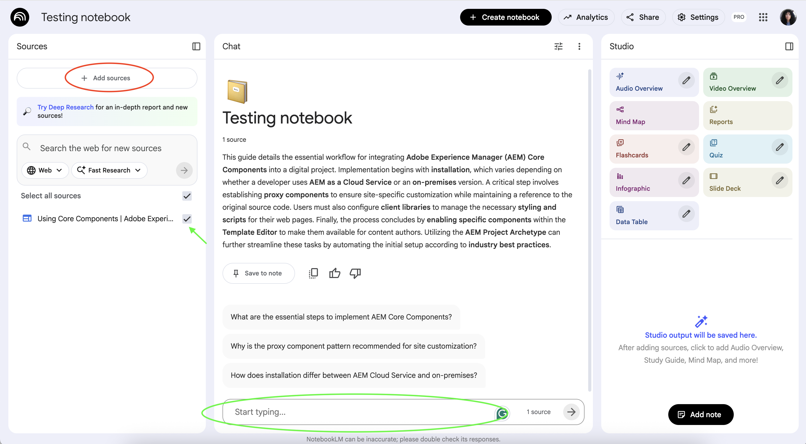
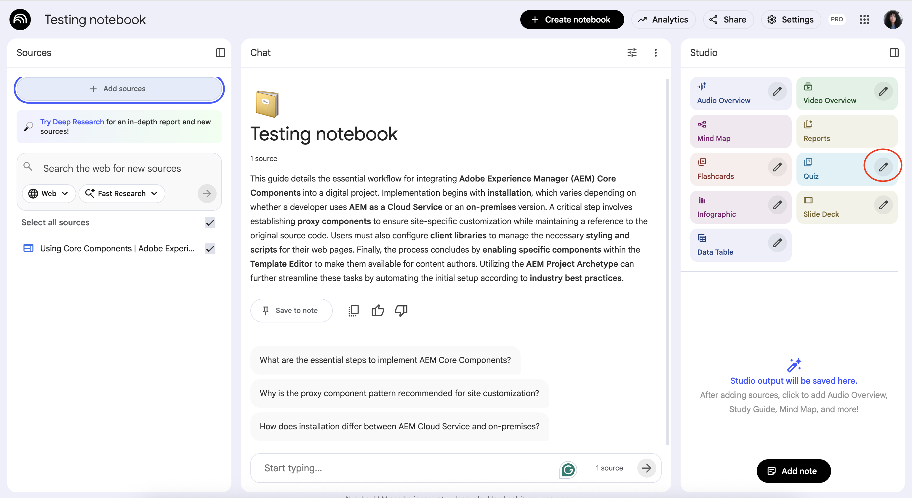
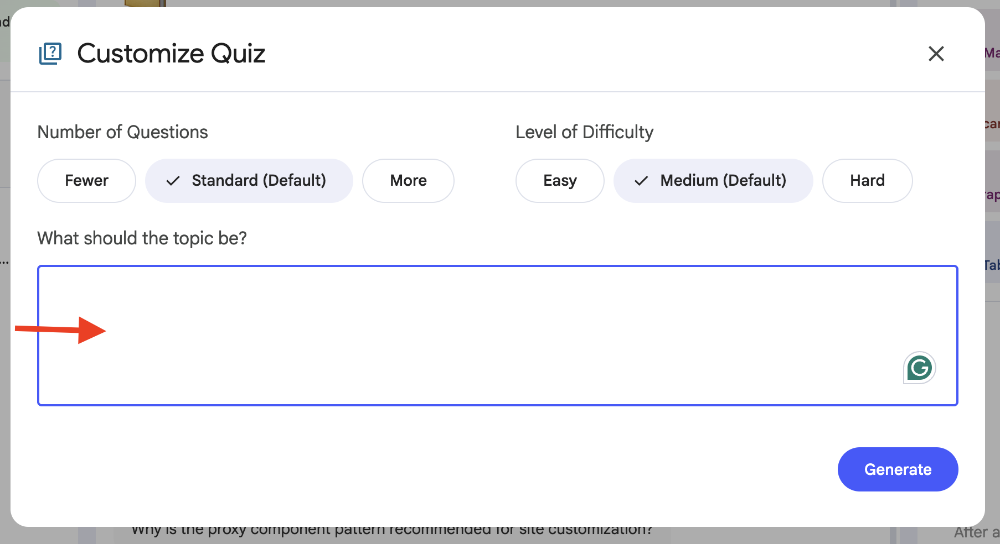

Purpose of This Website
This website has two main goals.
First, it provides a practical study guide for people preparing for the Adobe Certified Professional - Site Developer (AD0-E128) certification. It explains how to use NotebookLM as a support tool to better understand the official documentation and practice exam-style questions.
Second, this website is intentionally designed as an example of an accessible web page. All content and components are built following web accessibility best practices, so visitors can explore how accessibility works in a real, functional context.
By combining both goals, this site demonstrates that accessibility is not an extra layer added at the end of a project. It is a core part of good user experience design that benefits all users.
What Is NotebookLM?
NotebookLM is an AI-powered research and learning tool that helps you work with your own source materials. Instead of generating generic answers, it bases its responses strictly on the documents you provide.
For exam preparation, this makes NotebookLM especially useful. You can upload official technical documentation and then ask questions or generate practice content that stays aligned with the actual exam scope.
Key Features for Exam Preparation
-
Source-based answers
NotebookLM only uses the documents you upload, which helps avoid incorrect or out-of-scope information.
-
Question and quiz generation
You can generate practice questions based on real documentation, including scenario-based and multiple-choice questions.
-
Summaries and explanations
Complex sections of technical documentation can be summarized in clear, structured language.
-
Multiple document support
As you study more topics, you can group several documents together to reinforce connections between related concepts.
Study Workflow Using NotebookLM
This section describes a practical workflow to prepare for the AD0-E128 certification exam by combining official resources with targeted practice and AI-assisted review.
The goal of this workflow is to reinforce understanding, recognize common exam patterns, and identify knowledge gaps early.
You can generate quizzes using:
Steps to generate the quiz using the Chat section:
-
Add the source (website link or document) and keep it selected.
 Type or paste the in the Chat input
Steps to generate the quiz using the Quiz button:
-
Click the edit icon on the Quiz button.
 -
Set your preferences (Number of Questions, Level of Difficulty) and paste the prompt in the input field (omit the formatting instructions, as Studio handles that automatically).

NotebookLM Quiz Prompt
Generate a practice quiz based strictly on the uploaded technical documentation.
The quiz should follow the style of the AD0-E128 certification exam:
- Focus on technical, scenario-based questions.
- Use multiple-choice questions with one or more correct answers.
- Clearly indicate how many answers are correct.
- Avoid purely theoretical or definition-only questions.
- Base each question on real configuration details, behaviors, limitations, or best practices described in the documentation.
- Include tricky but realistic distractors that reflect common misunderstandings.
Format the output as follows (use this full format when entering the prompt in the CHAT section):
- First, list all questions only (numbered), without answers or explanations.
- After all questions, include a separate section titled “Answers and Explanations”.
- For each question in the answers section:
a. Provide the correct answer(s), each option on a separate line (A, B, C, D, etc.).
b. Briefly explain why each correct option is valid, referencing the relevant part of the documentation.
Generate 10 questions.
Accessible Web Components
Page Layout and Landmarks
The page uses semantic HTML elements to define clear regions, such as header, navigation, main content, complementary content, and footer.
These landmarks help assistive technologies understand the structure of the page and allow users to navigate efficiently.
Images
Two types of images are demonstrated:
- Decorative images, which are ignored by assistive technologies
- Informative images, which include meaningful alternative text
This ensures that images support the content without creating unnecessary noise for screen reader users.
Tabs
The tabs component allows users to switch between related content without leaving the page.
The component:
- Is fully keyboard navigable
- Uses appropriate ARIA roles
- Clearly indicates which tab is active
Accordion
This section demonstrates two types of accordion components: a native HTML <details>/<summary> accordion, and a JavaScript-controlled collapsible accordion. Both allow content sections to expand and collapse accessibly.
Modal Dialog
The modal dialog example demonstrates proper focus management.
When the modal opens:
- Focus moves into the dialog
- Keyboard focus is trapped inside the dialog
- The Escape key closes the modal
- Focus returns to the triggering element when the modal closes
Form
The form example demonstrates accessible form design, including:
- Explicit labels for all form fields
- Grouping related fields using fieldsets and legends
- Clear instructions and error handling
The form can be completed using only a keyboard or assistive technology.